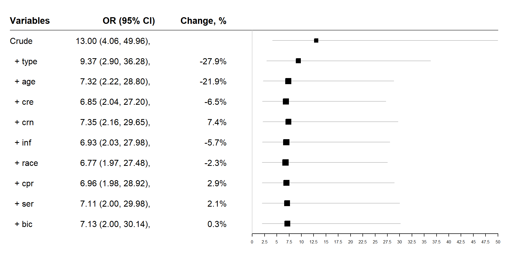

| sta | ||||
| Predictors | Odds Ratios | std. Error | CI | p |
| (Intercept) | 0.19 | 0.04 | 0.13 – 0.28 | <0.001 |
| sis baja | 13.00 | 8.12 | 4.06 – 49.96 | <0.001 |
| Observations | 200 | |||
| Deviance | 181.102 | |||
| log-Likelihood | -90.551 | |||
Modelos de Prediccion - Ajuste
Diego Halac
Objetivos
- Definir Modelo de Prediccion
- Explicar el proceso de Validacion Interna y Externa de un modelo de Prediccion
OBJETIVOS DE UN MODELO PREDICTIVO
Lograr predecir la probabilidad de ocurrencia de eventos desconocidos para distintos individuos en base a la información provista por los datos.
Pronóstico
Cuando se busca identificar la combinación de variables asociadas con la ocurrencia de un evento en el futuro (ej. Mortalidad, desarrollo de IAM, reinternaciones ,
Diagnóstico
Cuando se busca identificar las variables asociadas con un evento o estado de salud actual ( faringitis estreptocóccica , IAM, apendicitis aguda, etc.)
Reglas de Predicción Clínica
Una regla de predicción debe basarse en un modelo robusto y debe evaluarse en base a varias propiedades tanto desde el punto de vista clínico como el estadístico.
Estadístico
- Calibración
- Discriminación
- Overfitting → Parsimonia
- Validación
Clínico
- Simpleza
- Validez
- Utilidad
Calibración
Grado de acuerdo entre el evento real y la predicción del modelo (observado vs esperado)

Discriminación
Capacidad del modelo para distinguir entre los individuos que experimentan el evento de interés y los individuos que no.
- Una buena regla debe poder discriminar las categorías de riesgo del evento en base a los valores de los predictores incluídos en el modelo de predicción.
- La curva ROC resume la relación entre el modelo de predicción y el evento, graficando los pares de sensibilidad / especificidad obtenidos para cada punto de corte.
- Cuantifica la probabilidad de que el valor predicho para un individuo CON el evento será mayor que el predicho para un individuo SIN el evento.
Parsimonia
Se refiere al número de variables incluido en el modelo

Estrategias para Limitar el Número de Predictores
- Regla de 1/10
- Tener en cuenta Balance
Reduccion de Dimensionalidad
Regularizacion
VALIDACION
EXTERNA:
Antes de utilizar un modelo de Predicción deberiamos Validarlo en otro set de datos.
INTERNA
Parte del desarrollo del modelo, contribuye a aumentar la reproducibilidad minimizando modelos optimistas (Overfitting)
VALIDACION - TECNICAS
- Spliting: Interna o Externa depende de la forma de realizar la partición.
- Resamping:
- Cross Validation
- Bootstrapping
Calibración y Discriminación
Correr el modelo construido (variables seleccionadas) con la población de test y Comparar los coeficientes.(ver si los coeficientes de ambos modelos se encuentran contenidos en el IC95% del otro)

Calibración y Discriminación
Debemos reentrenar al modelo con la base de datos de Validacion para tener resultados adecuados en el modelo o Debemos comparar predicción de modelo entrenado con TRAIN (utilizar los coeficientes generados) en población TEST comparar contra observado TEST y de ahi obtener H&L, AUC-ROC, SyE ?

OTRA FORMA?

Ejemplo


CONTROL SIMULTANEO DE CONFUNDIDORES
OBJETIVOS DE UN MODELO DE AJUSTE
Identificar el efecto de una variable de interés sobre el evento en estudio, independientemente de los otros factores presentes en el modelo (explicativo).
Cuantificar el efecto que esa variable de interés tiene sobre el evento (magnitud de la asociación)
Analizar el rol del azar y el de posibles efectos confundidores y/o modificadores de efecto que otras variables independientes (covariables) puedan ejercer sobre esa relación.
Qué es un Confundidor?
- Factor asociado con la variable de interés.
- Determinante independiente del evento en estudio.
- En la práctica, decimos que un 3er criterio considera que es un confundidor cuando su presencia en el modelo cambia el efecto estimado para la variable de interés (coeficiente) al menos un 20%.
Potenciales Confundidores
- Se sospechan antes de construir el modelo.
- Se incluyen las variables al modelo evaluando relacion con el evento y con la variable de interes.
- Se eliminan del modelo multiple si No tienen asociación con la variable de interés y su asociación con el evento se pierde al controlar otras variables.
Objetivo de modelo de AJUSTE
Obtener una medida verdadera del efecto de la variable de interés sobre el \(odds\) del evento que sea independiente del efecto de las otras variables en el modelo.
Formas de Ajustar:
Estratificación Múltiple

Modelo Multivariable

Es importante lograr un balance entre la construcción de un modelo simple y la necesidad de controlar por el efecto confundidor residual que pueda quedar una vez ajustados los factores más importantes.
- No incluir todos los potenciales confundidores
- No hacer un modelo muy parsiomonioso que tenga efecto confundidor residual muy alto.
- Incluir los Potenciales confundidores que capturen la mayor parte del Efecto Confundidor entre la variable de interes y el evento, quedando un efecto residual bajo.
Ejemplo: Estudio ICU, evento: mortalidad, Variable de interés: TAS < 90mmHg.
Pregunta: ¿cuál es el efecto independiente de la hipotensión sistólica sobre el riesgo de mortalidad una vez ajustados los otros factores de riesgo y posibles confundidores?
- Empecemos Bivariado…
Si estimamos el modelo con TODAS las variables?
| sta | ||||
| Predictors | Odds Ratios | std. Error | CI | p |
| (Intercept) | 0.00 | 0.01 | 0.00 – 0.09 | 0.001 |
| age | 1.04 | 0.02 | 1.01 – 1.07 | 0.009 |
| gender [Female] | 0.70 | 0.33 | 0.27 – 1.73 | 0.450 |
| race [Black] | 0.40 | 0.47 | 0.02 – 2.76 | 0.435 |
| race [Other] | 1.30 | 1.28 | 0.15 – 8.15 | 0.790 |
| ser [Surgical] | 0.84 | 0.46 | 0.28 – 2.45 | 0.745 |
| can [Yes] | 6.77 | 6.22 | 1.11 – 45.27 | 0.037 |
| crn [Yes] | 1.34 | 0.92 | 0.34 – 5.10 | 0.665 |
| inf [Yes] | 1.32 | 0.61 | 0.52 – 3.30 | 0.557 |
| cpr [Yes] | 5.44 | 4.21 | 1.21 – 26.53 | 0.029 |
| hra | 0.99 | 0.01 | 0.97 – 1.01 | 0.277 |
| pre [Yes] | 1.67 | 1.01 | 0.49 – 5.37 | 0.395 |
| type [Emergency] | 12.98 | 12.16 | 2.52 – 112.37 | 0.006 |
| fra [Yes] | 1.64 | 1.64 | 0.18 – 10.58 | 0.622 |
| po2 [<= 60] | 1.11 | 0.95 | 0.20 – 5.92 | 0.899 |
| ph [< 7.25] | 1.72 | 1.75 | 0.23 – 13.11 | 0.591 |
| pco [> 45] | 0.26 | 0.24 | 0.03 – 1.46 | 0.152 |
| bic [< 18] | 0.97 | 0.78 | 0.19 – 4.68 | 0.969 |
| cre [> 2.0] | 1.06 | 1.02 | 0.15 – 7.13 | 0.951 |
| sis baja | 7.91 | 6.02 | 1.94 – 41.07 | 0.007 |
| Observations | 200 | |||
| Deviance | 146.518 | |||
| log-Likelihood | -73.259 | |||
Diferencia entre el odds de sis_baja ?
- Vemos que la estimación varió > 20%, sugiriendo un efecto confundidor por una o más variables dentro del modelo.
- Si bien el modelo presenta muchas variables no significativas por el Wald test, podría ser un error eliminarlas, ya que el resultado del test puede variar sustancialmente en función de las variables que el modelo contiene.
- Dado que la hipótesis nula del Wald test es la de no asociación entre esa variable y el evento (2do criterio), uno podría seleccionar solo aquellas que al menos tengan una p < 0,2 para seguir considerándolas potenciales confundidores (de esa manera uno aumenta el poder del test) y correr nuevamente el modelo.
- Al seleccionar solo variables con p <0,2 uno puede ganar precisión en la estimación del efecto de interés al eliminar variables innecesarias y simplificar el modelo.
Bivariado
| Characteristic | N | OR | 95% CI | p-value |
|---|---|---|---|---|
| age | 200 | 1.03 | 1.01, 1.05 | 0.009 |
| gender | 200 | |||
| Male | — | — | ||
| Female | 1.11 | 0.54, 2.24 | 0.77 | |
| race | 200 | |||
| White | — | — | ||
| Black | 0.27 | 0.01, 1.39 | 0.21 | |
| Other | 0.93 | 0.14, 3.92 | 0.93 | |
| ser | 200 | |||
| Medical | — | — | ||
| Surgical | 0.39 | 0.18, 0.79 | 0.010 | |
| can | 200 | |||
| No | — | — | ||
| Yes | 1.00 | 0.27, 2.93 | >0.99 | |
| crn | 200 | |||
| No | — | — | ||
| Yes | 3.39 | 1.22, 9.06 | 0.015 | |
| inf | 200 | |||
| No | — | — | ||
| Yes | 2.50 | 1.24, 5.16 | 0.011 | |
| cpr | 200 | |||
| No | — | — | ||
| Yes | 5.44 | 1.70, 17.9 | 0.004 | |
| hra | 200 | 1.00 | 0.99, 1.02 | 0.65 |
| pre | 200 | |||
| No | — | — | ||
| Yes | 1.26 | 0.47, 3.07 | 0.62 | |
| type | 200 | |||
| Elective | — | — | ||
| Emergency | 8.89 | 2.58, 56.0 | 0.003 | |
| fra | 200 | |||
| No | — | — | ||
| Yes | 1.00 | 0.22, 3.34 | >0.99 | |
| po2 | 200 | |||
| > 60 | — | — | ||
| <= 60 | 1.94 | 0.58, 5.70 | 0.25 | |
| ph | 200 | |||
| >= 7.25 | — | — | ||
| < 7.25 | 1.86 | 0.48, 6.08 | 0.32 | |
| pco | 200 | |||
| <= 45 | — | — | ||
| > 45 | 1.00 | 0.27, 2.93 | >0.99 | |
| bic | 200 | |||
| >= 18 | — | — | ||
| < 18 | 2.14 | 0.63, 6.44 | 0.19 | |
| cre | 200 | |||
| <= 2.0 | — | — | ||
| > 2.0 | 4.43 | 1.17, 16.7 | 0.024 | |
| sis_baja | 200 | 13.0 | 4.06, 50.0 | <0.001 |
| Abbreviations: CI = Confidence Interval, OR = Odds Ratio | ||||
Estrategia del CAMBIO EN LA ESTIMACION
Evaluamos los posibles confundidores en base a criterios estadísticos sobre la relación de cada covariable con el evento en estudio.
Ninguna de estas estrategias considera la relación de las covariables con la variable de exposición de interés sisbaja) → pueden seleccionarse variables que no son verdaderos confundidores.
Nos interesa evaluar el ajuste progresivo que la presencia de otras covariables tienen sobre el efecto de la exposición de interés ( sisbaja ) en su relación con la mortalidad.
Pasos para el Ajuste Progresivo
- Se estima el efecto de agregar cada una de las covariables al modelo inicial (un modelo con la exposición de interés la covariable que uno decide evaluar como potencial confundidor).
- Luego se observa el de cambio en la estimación de la exposición de interés sisbaja con cada potencial confundidor y se selecciona aquella covariable que induce el mayor cambio.
- Se repite el procedimiento agregando las covariables al modelo basal, que ahora esta compuesto por la exposición de interés más la covariable seleccionada en el paso previo.
- Esto se repite hasta que ninguna covariable agregada induce un cambio mayor del 10-20 % en la estimación de la exposición de interés.
Change in estimate - Ejemplo
| var | odds | cambio |
|---|---|---|
| sis_baja | 13.00 | 0.00 |
| race | 12.41 | 0.05 |
| ser | 10.76 | 0.21 |
| crn | 13.34 | -0.03 |
| inf | 11.03 | 0.18 |
| cpr | 12.86 | 0.01 |
| type | 9.37 | 0.39 |
| bic | 12.66 | 0.03 |
| cre | 11.41 | 0.14 |
| age | 11.19 | 0.16 |
| sta | sta | |||||||
| Predictors | Odds Ratios | std. Error | CI | p | Odds Ratios | std. Error | CI | p |
| sis baja | 13.00 | 8.12 | 4.06 – 49.96 | <0.001 | 9.37 | 5.89 | 2.90 – 36.28 | <0.001 |
| type [Emergency] | 6.80 | 5.11 | 1.94 – 43.14 | 0.011 | ||||
| Observations | 200 | 200 | ||||||
| Deviance | 181.102 | 170.681 | ||||||
| log-Likelihood | -90.551 | -85.341 | ||||||
| sta | sta | |||||||
| Predictors | Odds Ratios | std. Error | CI | p | Odds Ratios | std. Error | CI | p |
| sis baja | 9.37 | 5.89 | 2.90 – 36.28 | <0.001 | 9.11 | 5.75 | 2.80 – 35.42 | <0.001 |
| type [Emergency] | 6.80 | 5.11 | 1.94 – 43.14 | 0.011 | 6.09 | 4.84 | 1.54 – 40.68 | 0.023 |
| ser [Surgical] | 0.83 | 0.35 | 0.36 – 1.88 | 0.662 | ||||
| Observations | 200 | 200 | ||||||
| Deviance | 170.681 | 170.489 | ||||||
| log-Likelihood | -85.341 | -85.244 | ||||||
| sta | sta | |||||||
| Predictors | Odds Ratios | std. Error | CI | p | Odds Ratios | std. Error | CI | p |
| sis baja | 9.37 | 5.89 | 2.90 – 36.28 | <0.001 | 8.31 | 5.28 | 2.53 – 32.50 | 0.001 |
| type [Emergency] | 6.80 | 5.11 | 1.94 – 43.14 | 0.011 | 6.24 | 4.71 | 1.76 – 39.76 | 0.015 |
| inf [Yes] | 1.81 | 0.71 | 0.84 – 3.94 | 0.130 | ||||
| Observations | 200 | 200 | ||||||
| Deviance | 170.681 | 168.379 | ||||||
| log-Likelihood | -85.341 | -84.190 | ||||||
| sta | sta | |||||||
| Predictors | Odds Ratios | std. Error | CI | p | Odds Ratios | std. Error | CI | p |
| sis baja | 9.37 | 5.89 | 2.90 – 36.28 | <0.001 | 7.32 | 4.68 | 2.22 – 28.80 | 0.002 |
| type [Emergency] | 6.80 | 5.11 | 1.94 – 43.14 | 0.011 | 8.82 | 6.70 | 2.47 – 56.50 | 0.004 |
| age | 1.03 | 0.01 | 1.01 – 1.06 | 0.007 | ||||
| Observations | 200 | 200 | ||||||
| Deviance | 170.681 | 162.186 | ||||||
| log-Likelihood | -85.341 | -81.093 | ||||||
| sta | sta | |||||||
| Predictors | Odds Ratios | std. Error | CI | p | Odds Ratios | std. Error | CI | p |
| sis baja | 7.32 | 4.68 | 2.22 – 28.80 | 0.002 | 6.85 | 4.42 | 2.04 – 27.20 | 0.003 |
| type [Emergency] | 8.82 | 6.70 | 2.47 – 56.50 | 0.004 | 8.44 | 6.43 | 2.34 – 54.25 | 0.005 |
| age | 1.03 | 0.01 | 1.01 – 1.06 | 0.007 | 1.03 | 0.01 | 1.01 – 1.05 | 0.008 |
| cre [> 2.0] | 1.71 | 1.25 | 0.38 – 7.24 | 0.466 | ||||
| Observations | 200 | 200 | ||||||
| Deviance | 162.186 | 161.664 | ||||||
| log-Likelihood | -81.093 | -80.832 | ||||||
| sta | sta | |||||||
| Predictors | Odds Ratios | std. Error | CI | p | Odds Ratios | std. Error | CI | p |
| sis baja | 7.32 | 4.68 | 2.22 – 28.80 | 0.002 | 7.19 | 4.62 | 2.16 – 28.44 | 0.002 |
| type [Emergency] | 8.82 | 6.70 | 2.47 – 56.50 | 0.004 | 8.84 | 6.71 | 2.47 – 56.66 | 0.004 |
| age | 1.03 | 0.01 | 1.01 – 1.06 | 0.007 | 1.03 | 0.01 | 1.01 – 1.05 | 0.009 |
| race [Black] | 0.44 | 0.48 | 0.02 – 2.55 | 0.452 | ||||
| race [Other] | 1.51 | 1.32 | 0.21 – 7.46 | 0.637 | ||||
| Observations | 200 | 200 | ||||||
| Deviance | 162.186 | 161.223 | ||||||
| log-Likelihood | -81.093 | -80.612 | ||||||
| sta | sta | |||||||
| Predictors | Odds Ratios | std. Error | CI | p | Odds Ratios | std. Error | CI | p |
| sis baja | 7.32 | 4.68 | 2.22 – 28.80 | 0.002 | 7.58 | 4.89 | 2.27 – 30.11 | 0.002 |
| type [Emergency] | 8.82 | 6.70 | 2.47 – 56.50 | 0.004 | 8.03 | 6.12 | 2.22 – 51.64 | 0.006 |
| age | 1.03 | 0.01 | 1.01 – 1.06 | 0.007 | 1.03 | 0.01 | 1.01 – 1.05 | 0.015 |
| crn [Yes] | 2.23 | 1.25 | 0.72 – 6.63 | 0.152 | ||||
| Observations | 200 | 200 | ||||||
| Deviance | 162.186 | 160.201 | ||||||
| log-Likelihood | -81.093 | -80.101 | ||||||
| sta | sta | |||||||
| Predictors | Odds Ratios | std. Error | CI | p | Odds Ratios | std. Error | CI | p |
| sis baja | 7.32 | 4.68 | 2.22 – 28.80 | 0.002 | 7.28 | 4.65 | 2.20 – 28.64 | 0.002 |
| type [Emergency] | 8.82 | 6.70 | 2.47 – 56.50 | 0.004 | 8.64 | 6.59 | 2.39 – 55.62 | 0.005 |
| age | 1.03 | 0.01 | 1.01 – 1.06 | 0.007 | 1.03 | 0.01 | 1.01 – 1.06 | 0.007 |
| bic [< 18] | 1.18 | 0.75 | 0.32 – 3.93 | 0.792 | ||||
| Observations | 200 | 200 | ||||||
| Deviance | 162.186 | 162.117 | ||||||
| log-Likelihood | -81.093 | -81.059 | ||||||
| sta | sta | |||||||
| Predictors | Odds Ratios | std. Error | CI | p | Odds Ratios | std. Error | CI | p |
| sis baja | 7.32 | 4.68 | 2.22 – 28.80 | 0.002 | 7.36 | 4.79 | 2.17 – 29.50 | 0.002 |
| type [Emergency] | 8.82 | 6.70 | 2.47 – 56.50 | 0.004 | 7.61 | 5.81 | 2.10 – 49.04 | 0.008 |
| age | 1.03 | 0.01 | 1.01 – 1.06 | 0.007 | 1.03 | 0.01 | 1.01 – 1.06 | 0.007 |
| cpr [Yes] | 4.06 | 2.62 | 1.13 – 14.87 | 0.030 | ||||
| Observations | 200 | 200 | ||||||
| Deviance | 162.186 | 157.583 | ||||||
| log-Likelihood | -81.093 | -78.791 | ||||||
Change in Estimate

Modelo Final
| sta | ||||
| Predictors | Odds Ratios | std. Error | CI | p |
| sis baja | 7.32 | 4.68 | 2.22 – 28.80 | 0.002 |
| age | 1.03 | 0.01 | 1.01 – 1.06 | 0.007 |
| type [Emergency] | 8.82 | 6.70 | 2.47 – 56.50 | 0.004 |
| Observations | 200 | |||
| Deviance | 162.186 | |||
| log-Likelihood | -81.093 | |||
Conclusiones
Modelos explicativos: propósito y utilidad
Buscan entender cómo se relacionan las variables independientes con un outcome.
Permiten identificar asociaciones ajustadas y variables relevantes para la comprensión del fenómeno.
Ajuste por confundidores
- El ajuste por confundidoras suele ser suficiente en muchos casos.
- Este ajuste permite interpretar los coeficientes como asociaciones ajustadas, pero no necesariamente como efectos causales.
Conclusiones II
Más allá de la asociación.
En algunos casos, puede quedar confusión residual aun después de ajustar.
Si el objetivo es estimar efectos (¿qué pasaría si…?), se requiere un enfoque causal explícito.
Por eso existen estrategias más robustas para aproximarse a la causalidad:
Propensity Score Matching (PSM) Crea grupos comparables de tratados y no tratados.
IPW (Inverse Probability Weighting) Repondera los datos para simular una población balanceada.
Modelos combinados (regresión + PS) Combinan ventajas de ambos enfoques (doble robustez).
Conclusiones III
¿Qué es una pregunta causal?
Busca estimar lo que habría pasado con un individuo, grupo o sistema si las cosas hubieran sido diferentes.
Por ejemplo:
¿Cuál habría sido la evolución clínica de este paciente si no hubiera recibido el tratamiento X?
¿Cómo habría cambiado el ALOS si hubiéramos implementado un protocolo de alta precoz?
Conclusiones IV
Contraste con preguntas asociativas
- Una pregunta asociativa se limita a observar diferencias:
- “¿Los pacientes tratados tienen menor mortalidad que los no tratados?”
- Una pregunta causal va más allá:
- “¿La diferencia de mortalidad se debe al tratamiento o a otras diferencias entre los grupos?”
PREGUNTAS